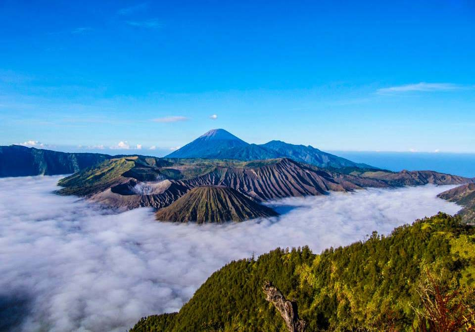
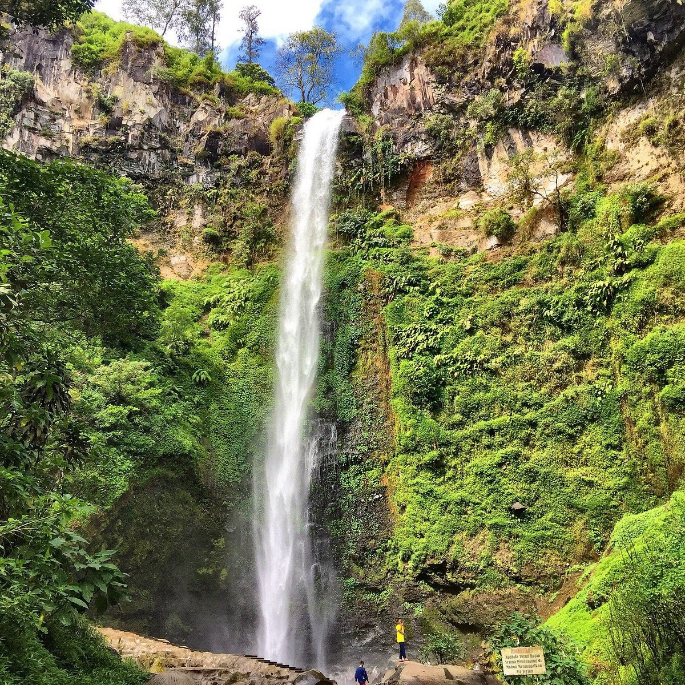

|
|||
|
🌍 Menu Wisata
Berikut adalah objek wisata menarik di Jawa Timur
Berikut adalah objek wisata menarik di Jawa Timur
|
 Gunung BromoGunung Bromo merupakan salah satu tempat wisata terkenal yang berada di Jawa Timur. |
Kawah IjenKawah Ijen merupakan salah satu tempat wisata terkenal yang berada di Jawa Timur. |
 Air Terjun Coban RondoAir Terjun Coban Rondo merupakan salah satu tempat wisata terkenal yang berada di Jawa Timur. |
contact Person : Jelajah Wisata +6287111 jibrilljibrill47@gmail.com